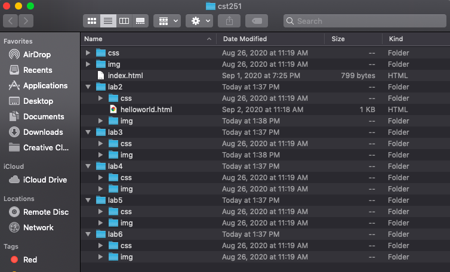
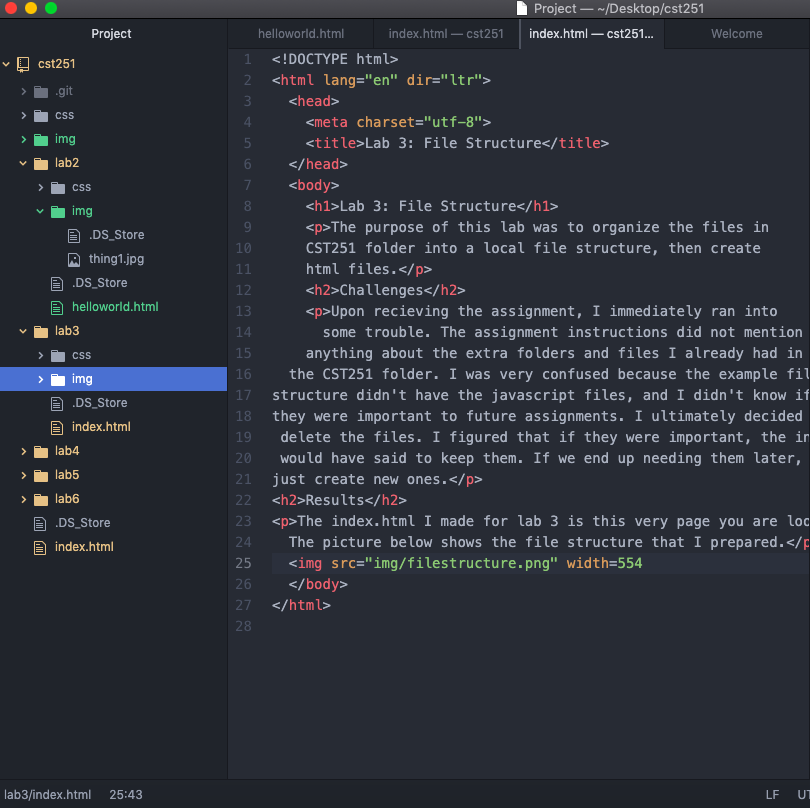
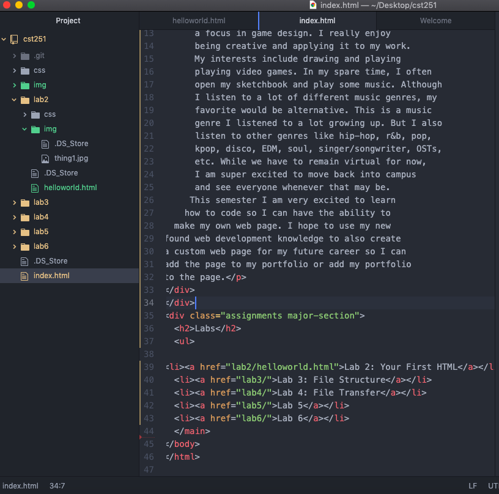

The purpose of this lab was to organize the files in CST251 folder into a local file structure, then create html files.
Upon recieving the assignment, I immediately ran into some trouble. The assignment instructions did not mention anything about the extra folders and files I already had in the CST251 folder. I was very confused because the example file structure didn't have the javascript files, and I didn't know if they were important to future assignments. I ultimately decided to delete the files. I figured that if they were important, the instructions would have said to keep them. If we end up needing them later, we would just create new ones.
The index.html I made for lab 3 is this very page you are looking at. The picture below shows the file structure that I prepared.
This next picture is the source code for this index file
Below is the source code for the index file in the CST251 folder
